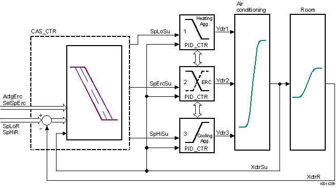
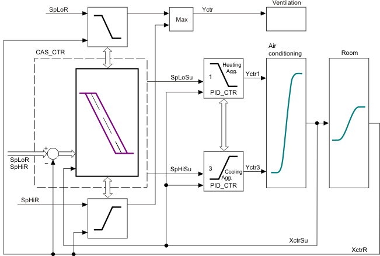
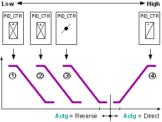
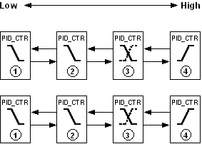
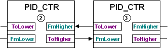
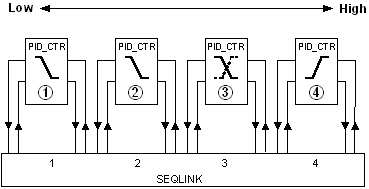
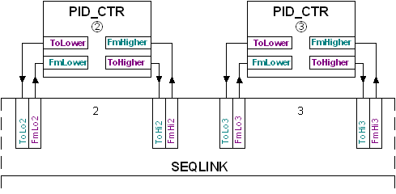

CAS_CTR: Cascade controller
The CAS_CTR (FB416) block is a PI primary controller for cascade control of the room supply air.
The block supplies the upper and lower supply air setpoints. In addition, the supply air setpoint for energy recovery is determined in dependence of its direction of control action.
The block can be used for temperature or humidity cascade control. CAS_CTR_SiUn (FB416), CAS_CTR_UsUn (FB793)
Functionality
Cascade control
The supply air setpoints [SpLoSu], [SpHiSu], and [SpErcSu] are calculated as follows:
Step | Process |
1 | The reference controller is switched by the inputs [EnFnct] and [OoServ]. (Operating modes). |
2 | The lower and upper supply air setpoint [SpLoSu], [SpHiSu] are controlled by the controlled variable [XctrR]. (Upper, lower supply air setpoints). |
3 | The control action of energy recovery [ActgErc] determines the supply air setpoint for energy recovery [SpErcSu]. (Supply air setpoint for energy recovery). |
Operating modes
If... | then... | ||
EnFnct | OoServ | CtrSta |
|
0 (No) | 0 (Off) | 1 (CtrOff) | The controller is switched off. |
1 (Yes) | 0 (Off) | 3 (CtrOn) | The controller is switched on. |
0 (No) | 1 (On) | 2 (CtrCmd) | The controller is switched off; the default value [DefVal] is available at the outputs. |
Upper, lower supply air setpoints
The CAS_CTR block works as a reference controller for cascade control of the room supply air. The task of the reference controller is to control the controlled variable [XctrR] of the outer control circuit to a value in the interval 〈[SpLoR],[SpHiR]〉. To do this, the reference controller CAS_CTR determines the three setpoints [SpLoSu], [SpErcSu], and [SpHiSu], which are controlled by the inner control circuit.
The sequence controller (see PID_CTR), which controls the controlled variable [XctrSu] of the inner control circuit to the setpoints supplied by the CAS_CTR block is a integral part of the inner control circuit.

The calculation of the upper and lower supply air setpoint depends on the [XctrR] operating mode and the controlled variable.
If... | then... | |
EnFnct | OoServ | |
0 (No) | 1 (On) | The reference controller is switched off. The default value [SpCmdSu] is available at the outputs [SpLoSu], [SpHiSu], and [SpErcSu]. [CtrSta] = 2 (CtrCmd). |
0 (No) | 0 (Off) | The reference controller is switched off. [CtrSta] = 1 (CtrOff) |
1 (Yes) | 0 (Off) | The reference controller calculates the lower supply air setpoint [SpLoSu] and the upper supply air setpoint [SpHiSu] from the corresponding room setpoints [SpLoR], [SpHiR] and from the controlled variable of the room [XctrR]. [CtrSta] = 3 (CtrOn) |
The calculated supply air setpoints are limited by [SpMinSu] and [SpMaxSu]. [CtrSta] = 4 (CtrMin) or 5 (CtrMax) | ||

Supply air setpoint for energy recovery.
The calculation of the supply air setpoint for energy recovery [SpErcSu] depends on the operating mode, the setpoint selection for energy recovery [SelSpErc] and on the present direction of control action for energy recovery [ActgErc].
OoServ | SelSpErc |
| |
1 (On) |
| The supply air setpoint for energy recovery [SpErcSu] is equal to [DefVal]. | |
0 (Off) | 1 (Center) | The supply air setpoint for energy recovery [SpErcSu] corresponds to the average value of the lower and upper supply air setpoint. [SpErcSu] = Average value [SpLoSu], [SpHiSu]. | |
0 (Edge) | The supply air setpoint for energy recovery [SpErcSu] depends on the present direction of control action [ActgErc]. | ||
ActgErg = 0 (Direct) | Supply air setpoint cooling[SpErcSu] = [SpHiSu] | ||
ActgErc = 1 (Reverse) | Supply air setpoint heating[SpErcSu] = [SpLoSu] | ||

Integrate in sequence control.
Block CAS_CTR be integrated in sequence control by interconnecting pins [ToLower] and [FmHigher] as well as [FmLower] and [ToHigher]. Can be accomplished either directly or via block SEQLINK. Integration of CAS_CTR in a sequence control corresponds to integration of the PID sequence controller and is described in detail there. As example, Illustration depicts control of a ventilation plant in a diagram. The volume flow is increased if the minimum or maximum supply air setpoint is reached.

Inputs
Pin | E | Description | |
EnFnct | p | Enable function. 1 (Yes): The function is enabled. 0 (No): The function is disabled. | |
OoServ | pa | Out of service. Commanding the controller output. 0 (Off): No commanding. 1 (On): The default value [SpCmdSu] is available at the outputs [SpLoSu], [SpHiSu], and [SpErcSu]. | |
DefVal | pa | Default supply air setpoint. The default value for [SpLoSu], [SpHiSu], and [SpErcSu] if [OoServ] = 1 (On). | |
SpHiR | pa | Setpoint high: Room. Setpoint for the room temperature (cooling) or room humidity (dehumidify). | |
SpLoR | pa | Setpoint low: Room. Setpoint for the room temperature (heating) or room humidity (humidify). | |
XctrR | pa | Controller input for room. Measured value for room temperature or room humidity. | |
XctrSu | pa | Controller input for supply air. Measured value for the supply air or supply air humidity. For PI control behavior, this input must be wired, for P-control behavior [XctrSu] is not needed. | |
ActgErc | p | Direction of control action for energy recovery. | |
0 (Direct) | Energy recovery occurs on cooling or dehumidifying. | ||
1 (Reverse) | Energy recovery occurs on heating or humidifying. | ||
Gain | pa | Gain. | |
10.0 | Default value | ||
... | The control deviation is increased ...-fold and processed in the control process. | ||
Tn | pa | Integral action time. | |
0ms | The cascade controller has a P-response. | ||
... | The cascade controller has a PI-response. | ||
SpMaxSu | pa | Maximum supply air setpoint. | |
SpMinSu | pa | Minimum supply air setpoint. | |
SelSpErc | p | Setpoint selection for energy recovery. See supply air setpoint for energy recovery. | |
0 (Edge) | The supply air setpoint for energy recovery [SpErcSu] depends on the present direction of control action [ActgErg]. | ||
1 (Center) | The supply air setpoint for energy recovery [SpErcSu] corresponds to the average value of the lower and upper supply air setpoint [SpHiSu], [SpLoSu]. | ||
EnIntini | pa | Enable integrator initialization. | |
1 (Yes) | Integrator initialization [IntgInit] is valid on startup. | ||
0 (No) | The start value calculated internally is valid on startup. | ||
IntgInit | pa | Integrator initialization. Integrator initialization for special applications. Engineering: Integrator initialization. | |
FmHigher _Elements | pa | From higher neighbor | |
FmLower __Elements | pa | From lower neighbor | |
The pins [ToLower] and [FmHigher], [FmLower] and [ToHigher] are interconnected only on a sequence controller. In this case, the following information is transported:
Pin | Description | |
_CtlMod | Control mode, Multistate. Operating mode of the sequence controller. | |
1 (Inactive) Default | Pin is not interconnected. | |
2 (Act) | Sequence controller is active. | |
3 (Off) | The sequence controller is disabled. | |
4 (On) | The sequence controller is enabled. | |
_Crdn | Coordination, Multistate. Coordination signal of the sequence controller. | |
1 (Nil) Default | Pin is not interconnected (border element). | |
2 (Link) | The sequence controller was interconnected via SEQLINK. | |
3 (Low) | [YctrMin] side of the sequence controller element. | |
4 (ErrLow) | Error in the sequence interconnection. | |
5 (Act) | Sequence controller is active. | |
6 (High) | [YctrMax] side of the sequence controller element. | |
_Ctkn | Controller token, Multistate. Controller enable. | |
1 (Nil) Default | Pin is not interconnected (border element). | |
2 (Link) | The sequence controller was interconnected via SEQLINK. | |
3 (Low) | [YctrMin] side of the sequence controller element. | |
4 (ErrLow) | Error in the sequence interconnection. | |
5 (Act) | Sequence controller is active. | |
6 (High) | [YctrMax] side of the sequence controller element. | |
_IsInt | Integrator state signal, Boolean. Information on the integrating action of the sequence controller element. | |
0 (No) Default | Non-integrating sequence controller element. | |
1 (Yes) | Integrating sequence controller element. | |
_DeltaE | Covered control error of the proportional part. Real Default value = 0.0 | |
Outputs
Pin | E | Description | |
ErSta | pa | Error state. | |
0 (No) Default | No error, [TknSta] is not HEL_CSEQ or CEL_HSEQ or RT_FAULT. | ||
1 (Yes) | Error, [TknSta] is HEL_CSEQ or CEL_HSEQ or RT_FAULT. | ||
CtrSta | f | Controller state. (See operating modes.) | |
1 (CtrOff) | The controller is switched off. | ||
2 (CtrCmd) | The controller is switched off. However, the default value [DefVal] is available at the outputs. | ||
3 (CtrOn) | The controller is switched on. | ||
4 (CtrMin) | The controller is limited by the lower supply air setpoint [SpMinSu]. | ||
5 (CtrMax) | The controller is limited by the upper supply air setpoint [SpMaxSu]. | ||
TknSta | a | Token state. Token state of the sequence controller element. | |
1 (NoTkn) | The sequence controller element has no token. | ||
2 (CtrTkn) | The sequence controller element has a controller token. | ||
3 (IntgTkn) | The sequence controller element has an integrator token. | ||
4 (BothTkns) | The sequence controller element has a both an integrator token and a controller token. | ||
5 (Hel_CSeq) | The sequence controller element features an incorrect direction of control action, e.g., heating sequence in the cooling sequence. | ||
6 (Cel_Hseq) | The sequence controller element features an incorrect direction of control action, e.g., cooling sequence in the heating sequence. | ||
7 (RTFault) | Error in the sequence controller element. | ||
SpHiSu | a | Setpoint high: Supply air. The setpoint for the supply air temperature (cooling) or supply air humidity (dehumidify) is available. (Direct-acting control sequence). | |
SpErcSu | a | Supply air setpoint for energy recovery. The setpoint for energy recovery is available. | |
SpLoSu | a | Setpoint low: Supply air. The setpoint for the supply air temperature (heating) or supply air humidity (humidify) is available. (Reverse-acting control sequence). | |
ToHigher _Elements | pa | To higher neighbor | |
ToLower _Elements | pa | To lower neighbor | |
Input values
Pin | Description | Data type | Default value | E.g. Engineering unit or Text group | Min. | Max. |
EnFnct | Enable function | Boolean | 1 (Yes) | No, Yes |
|
|
OoServ | Out of service | Boolean | 0 (Off) | Off, On |
|
|
DefVal | Default value | Real | 20.0 | °C | -50.0 | 150.0 |
68.0 | °F | -58.0 | 302.0 | |||
SpHiR | Setpoint high: Room | Real | 21.0 | °C | 0.0 | 100.0 |
70.0 | °F | 32.0 | 212.0 | |||
SpLoR | Setpoint low: Room | Real | 20.0 | °C | 0.0 | 100.0 |
68.0 | °F | 32.0 | 212.0 | |||
XctrR | Controller input for room | Real | 0.0 | °C | 0.0 | 100.0 |
0.0 | °F | 0.0 | 212.0 | |||
XctrSu | Controller input for supply air | Real | 0.0 | °C | 0.0 | 100.0 |
0.0 | °F | 0.0 | 212.0 | |||
ActgErc | Ctrl.act.energy recovery | Boolean | 1 (Reverse) | Direct, Reverse |
|
|
Gain | Gain | Real | 10.0 | °C / °F | 0.0 | 100.0 |
Tn | Integral action time Tn | Time | 2m | T#0d_0h_0m_0s_0ms |
|
|
SpMaxSu | Maximum supply air setpoint | Real | 32.0 | °C | -50.0 | 150.0 |
90.0 | °F | -58.0 | 302.0 | |||
SpMinSu | Minimum supply air setpoint | Real | 15.0 | °C | -50.0 | 150.0 |
59.0 | °F | -58.0 | 302.0 | |||
SelSpErc | Sel.en.recovery setpoint | Boolean | 0 (Edge) | Edge, Center |
|
|
EnIntini | Enable integrator initialization | Boolean | 0 (No) | No, Yes |
|
|
IntgInit | Integrator initialization | Real | 0.0 | °C | 0.0 | 100.0 |
0.0 | °F | 0.0 | 212.0 | |||
FmHigher | From higher neighbor | Struct |
|
|
|
|
FmLower | From lower neighbor | Struct |
|
|
|
|
Output values
Pin | Description | Data type | Default value | E.g. Engineering unit or Text group | Min. | Max. |
ErSta | Error state | Boolean | 0 (No) | No, Yes |
|
|
CtrSta | Controller state | Multistate | 1 (CtrOff) | Controller state | CtrOff | CtrMax |
TknSta | Token state | Multistate | 1 (NoTkn) | TokenHere | NoTkn | RTFault |
SpHiSu | Setpoint high: Supply air | Real | 26.0 | °C | -50.0 | 150.0 |
79.0 | °F | -58.0 | 302.0 | |||
SpErcSu | Setp.SA energy recovery | Real | 23.0 | °C | -50.0 | 150.0 |
73.0 | °F | -58.0 | 302.0 | |||
SpLoSu | Setpoint low: Supply air | Real | 20.0 | °C | -50.0 | 150.0 |
68.0 | °F | -58.0 | 302.0 | |||
ToHigher | To higher neighbor | Struct |
|
|
|
|
ToLower | To lower neighbor | Struct |
|
|
|
|
Engineering temperature or humidity control
The reference controller is used for both temperature and humidity control.
Pin | Use Temperature control | Use Humidity control. | |
SpLoSu | Setpoint low: Supply air | Supply temp.setp.heating. | Supply air setpoint for humidification. |
SpHiSu | Setpoint high: Supply air | Supply temp.setp.cooling. | Supply air setpoint for dehumidification. |
Change the following settings when using it as a reference controller for humidity control:
Step | Procedure | ||
1 | Change the pin unit with dependence 1 from °C to g/kg. | ||
Change the pin unit with dependence 1 from °F to lb/lbda. | |||
2 | Change the pin unit with dependence 2 from °C to %RH. | ||
Change the pin unit with dependence 2 from °F to %RH. | |||
3
| Adjust the default values for the following pins. | ||
Pin | Unit | Default value | |
DefVal | g/kg | 5 | |
Lb/lbda | 0.005 | ||
SpHiR | %RH | 60 | |
SpLoR | %RH | 30 | |
XctrR | %RH | 0.0 | |
XctrSu | %RH | 0.0 | |
Gain | (g/kg)/(%RH) | 1 | |
(lb/lbda)/(%Rh) | 0.001 | ||
Tn | TIME | 10 | |
SpMaxSu | g/kg | 10.5 | |
lb/lbda | 0.011 | ||
SpMinSu | g/kg | 4.5 | |
lb/lbda | 0.005 | ||
IntgInit | g/kg | 0.0 | |
lb/lbda | 0.0 | ||
SpHiSu | g/kg | --- | |
lb/lbda | --- | ||
SpErcSu | g/kg | --- | |
lb/lbda | --- | ||
SpLoSu | g/kg | --- | |
lb/lbda | --- | ||
Integrator initialization [IntgInit]
Humidity control by different physical controlled variables
If the supply air [XctrSu] is measured in absolute humidity [g/kg], and the room air [XctrR] in relative humidity [%hu], the integrator initialization value must be predefined; otherwise, the mean value calculated from [SpLoR] + [SpHiR]) is used. If the room setpoints are defined in absolute humidity, the integrator initialization value starts at a high value and returns to the set integral action time [Tn]. As a result, humidification may be enabled during controller initialization until the integrator has reached the correct value, even if the room would need dehumidification.
To prevent this, the present measured value for the supply air humidity [XctrSu] is interconnected to the integrator initialization [IntgInit], or a fixed parameter value for the is defined for the integrator.
Requirement for high accuracy of control
If there are high requirements of the control accuracy (e.g. work without energy-free control zone), the present measured value for the supply air humidity [XctrSu] is interconnected to the integrator initialization [IntgInit], or a fixed parameter value for the is defined for the integrator.
Details on operation as cascade sequence controller: PID-Sequenzregler
A sequence controller is used if several aggregates are used to control a controlled value in accordance with the predefined control sequence. The sequence controller switches the individual sequence controller elements according to the control sequences and coordinates control for the individual controller elements in a interrelated control behavior across all sequence controller elements or aggregates.
The functioning of the sequence controller comprises all processes that influence each other:
- Enabling or disabling a sequence controller
- Control process of the sequence controller
- Enabling/disabling/commanding an individual sequence controller element
- Control process of the individual sequence controller elements. The control process corresponds to that of a universal PID controller.
Enabling or disabling a sequence controller
The sequence controller is disabled by disabling [EnFnct] = No or commanding [OoServ] = On all sequence controller elements. If then a selection of sequence controller elements is enabled with properly parameterized control action ([EnFnct] = Yes and [OoServ] = Off), the sequence controller elements are initiated within this selection: The control process is started with that sequence controller element of the enabled selection that is closest to the control action changeover and that contains the control action for the respective situation determined by the present actual values and setpoints.
If the sequence control process is to be initiated by a particular sequence controller element, the corresponding sequence controller element must be enabled prior to all other elements; else, the above described process is used.
Control process of the sequence controller
The sequence controller switches control of the individual sequence controller elements via the controller token. Further signals to coordinate control of the sequence controller elements are necessary in addition to the controller token. The associated signals are exchanged via the pins [ToLower] and [FmHigher] and the pins [FmLower] and [ToHigher].
Step | Control process of the sequence controller |
--- | In each process cycle, the individual sequence controller elements independently determine the sequence controller element that carries out control (independent of the operating mode of the sequence controller). If a sequence controller element satisfies the following conditions, the controller token adopts [TknSta] = CntrTkn.
|
1 | The sequence controller must be enabled. Enabling or disabling a sequence controller |
2 | The sequence controller element featuring the controller token controls the plant [Yctr]. All other sequence controller elements are constant. [TknSta] = CntrTkn [CtrSta] = CntrOn Exception: Enabling/disabling/commanding individual sequence controller elements |
3 | If the control range of the controlling sequence controller element is exhausted, [Yctr] > [YctrMax] or [Yctr] < [YctrMin], the controller token is passed on to the following sequence controller element (according to the operating sequence). [TknSta] = NoTkn [CtrSta] = CntrMin or CntrMax Exception: Sequence controller elements with [EnFnct] = No or [OoServ] = On are not switched. |
--- | If all controller outputs of the enabled sequence elements are set to their limit values [CtlSta] = CntrMin or [CtlSta] = CntrMax, the sequence controller element does not have a controller token. This may occur in different parameter settings of the sequence controller elements, e.g. within the energy-free zone due to different setpoints. |
Enabling/disabling/commanding an individual sequence controller element
The sequence controller considers the influence on control and integration if a sequence controller element is enabled, disabled, or commanded via its operating mode (e.g. via operator intervention).
If... | then... | ||
EnFnct | OoServ | Sequence controller element | Sequence controller |
0 (No) | 0 (Off) | The sequence controller element immediately sets the controller output [Yctr] = 0. | The sequence controller skips the sequence controller element in the operating sequence. If the controlling sequence controller element is disabled, the subsequent sequence controller element starts controlling. |
1 (Yes) | 0 (Off) | The sequence controller element checks if it was skipped by the sequence controller in the operating sequence. If the sequence controller element was skipped, its controller output [Yctr] increases to [Yctr] = YctrMax at speed Ti0to100. If the sequence controller element was not skipped, [Yctr] decreases to [Yctr] = YctrMin at speed Ti100to0. | The sequence controller adds the sequence controller element to the operating sequence. |
0 (No) | 1 (On) | The sequence controller element immediately sets the controller output [Yctr] = DefVal. | The sequence controller skips the sequence controller element in the operating sequence. If the controlling sequence controller element is newly commanded, the subsequent sequence controller element starts controlling. |
Details on engineering as cascade sequence controller: Engineering - PID sequence controller
The sequence controller is formed by interconnecting and parameterizing PID_CTR blocks (sequence controller elements). The sequence controller's functionality is generated automatically (via information channels). The sequence of the individual aggregates is determined by the interconnection sequence of the PID_CTR blocks.
Engineering comprises the following steps:
Step | Procedure |
1 | Determining the order of the sequence controller elements |
2 | Interconnecting sequence controller elements |
3 | Parameterizing the sequence controller element
|
4 | Setting/tuning the sequence controller |
Determining the order of the sequence controller elements
As a rule, the sequence controller consists of individual PID_CTR blocks. Each PID_CTR acts as a sequence controller element for an aggregate.
The interconnection sequence of the PID_CTR blocks (from low to high) corresponds to the order of the control sequences (1..n) of the sequence controller. The planned operating range (e.g. heating) and the switching sequence must be considered accordingly when interconnecting the [PID_CTR].

For example aggregates: 1 = Air dampers, 2 = Preheater, 3 = Reheater, 4 = Cooler.
Control sequence for heating: 1 ---> 2 ---> 3.
Control sequence for cooling: 4 ---> ....
- The lowest sequence controller element corresponds to control sequence 1, the highest to control sequence n.
- The lowest sequence controller element controls an aggregate using reverse action (if available).
Interconnecting sequence controller elements
There are two ways to interconnect the CAS_CTR blocks with a sequence controller:
1.) Direct interconnection

The individual CAS_CTR blocks are interconnected with each other.
Interconnection is made between the pins [ToLower] and [FmHigher] and the pins [FmLower] and [ToHigher].

This type of interconnection is used if the PID_CTR blocks are located on the same chart.
2.) Interconnection to SEQLINK

The individual PID_CTR blocks are interconnected via the SEQLINK block.
Interconnection occurs between the pins for block PID_CTR and a place on the SEQLINK block. The sequence of PID_CTR must match the order of the places. However, free places are possible on the SEQLINK. Several SEQLINKs can be interconnected in series.

This type of interconnection is used if the PID_CTR blocks are located on different charts or if the individual sequence controller elements or aggregates may not be interconnected (CAS library).
Important: The sequence controller elements must be parameterized in accordance with the interconnection.
The pins [ToLower] and [FmHigher], [FmLower] and [ToHigher] are interconnected only on a sequence controller. In this case, the following information is transported:
Pin | Description | |
_CtlMod | Control mode, Multistate. Operating mode of the sequence controller. | |
1 (Inactive) Default | Pin is not interconnected. | |
2 (Act) | Sequence controller is active. | |
3 (Off) | The sequence controller is disabled. | |
4 (On) | The sequence controller is enabled. | |
_Crdn | Coordination, Multistate. Coordination signal of the sequence controller. | |
1 (Nil) Default | Pin is not interconnected (border element). | |
2 (Link) | The sequence controller was interconnected via SEQLINK. | |
3 (Low) | [YctrMin] side of the sequence controller element. | |
4 (ErrLow) | Error in the sequence interconnection. | |
5 (Act) | Sequence controller is active. | |
6 (High) | [YctrMax] side of the sequence controller element. | |
_Ctkn | Controller token, Multistate. Controller enable. | |
1 (Nil) Default | Pin is not interconnected (border element). | |
2 (Link) | The sequence controller was interconnected via SEQLINK. | |
3 (Low) | [YctrMin] side of the sequence controller element. | |
4 (ErrLow) | Error in the sequence interconnection. | |
5 (Act) | Sequence controller is active. | |
6 (High) | [YctrMax] side of the sequence controller element. | |
_IsInt | Integrator state signal, Boolean. Information on the integrating action of the sequence controller element. | |
0 (No) Default | Non-integrating sequence controller element. | |
1 (Yes) | Integrating sequence controller element. | |
_DeltaE | Covered control error of the proportional part. Real Default value = 0.0 | |
Parameterizing the sequence controller element' control action
The set operating range (e.g. heating, cooling) determines the direction of control action [Actg] for a sequence controller element. Direction of control action changeover during operation is possible (e.g. energy recovery). If aggregate control demands an inverted signal, inversion [Inv] of the controller output [Yctr] helps solve this problem.
In the sequence controller, the direction of control action must feature the following response:

- The first or lowest sequence controller elements have reverse direction for control action [Actg] = Reverse.
- The first or highest sequence controller elements have direct direction of control action [Actg] = Direct.
- A sequence controller element with changing direction of control action (e.g. energy recovery) can only be in between.
Deviations generate an error signal [ErSta] = Yes. Troubleshooting
Parameterizing setpoints and an energy-free zone
In the sequence controller, the setpoints [Sp] of the sequence controller elements (1...n) must increase monotonously:
[Sp]1 <= [Sp]2 <= [Sp]3 <= ... <= [Sp]n
Modulating control on transition from one control sequence to another is ensured if the control sequences with the same direction of control action have the same setpoint.

The energy-free zone is defined by the setpoints on changeover of the direction of control action (e.g. heating setpoint, cooling setpoint).

Process response
Standard (see General rules and information).
Troubleshooting
Standard (see General rules and information).